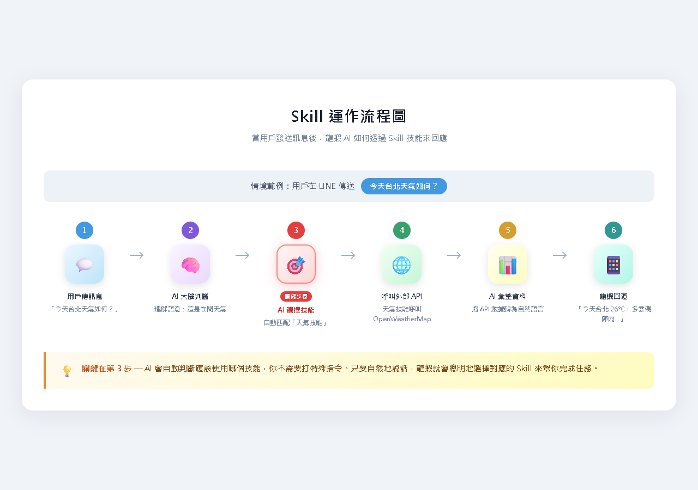
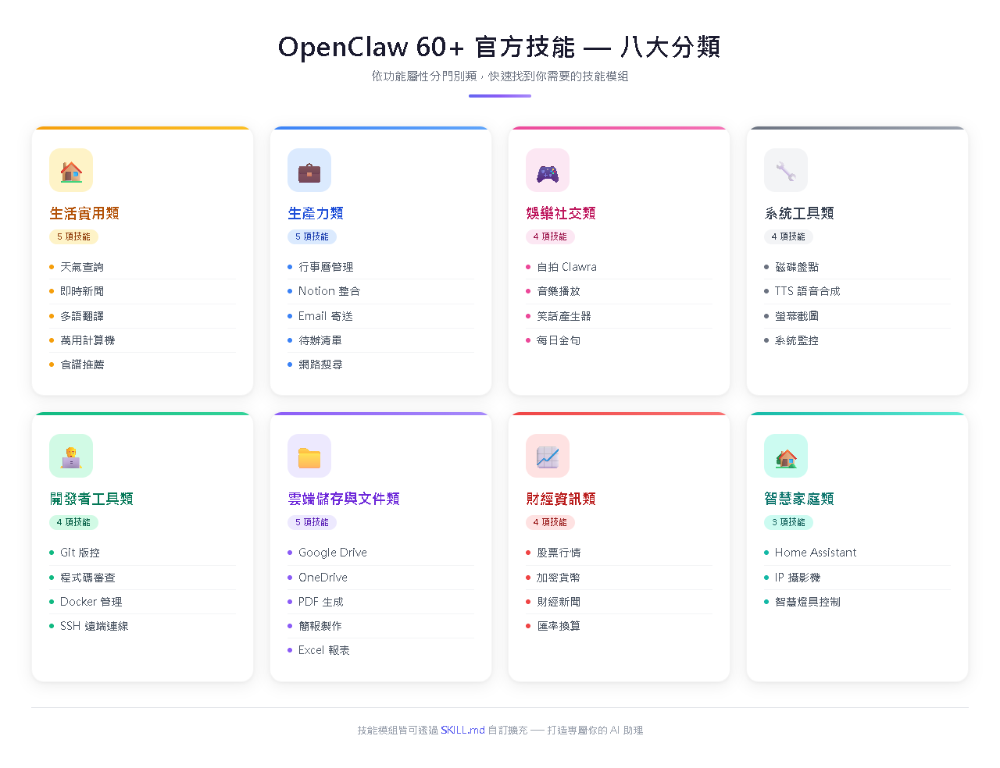
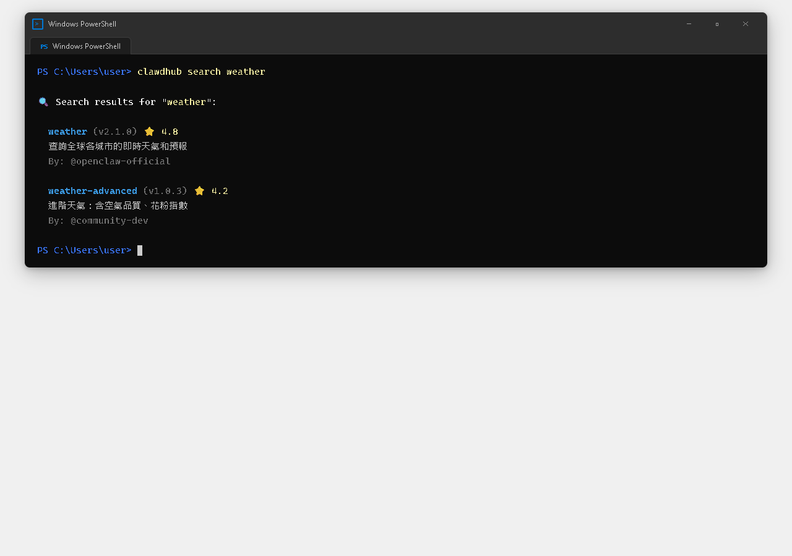
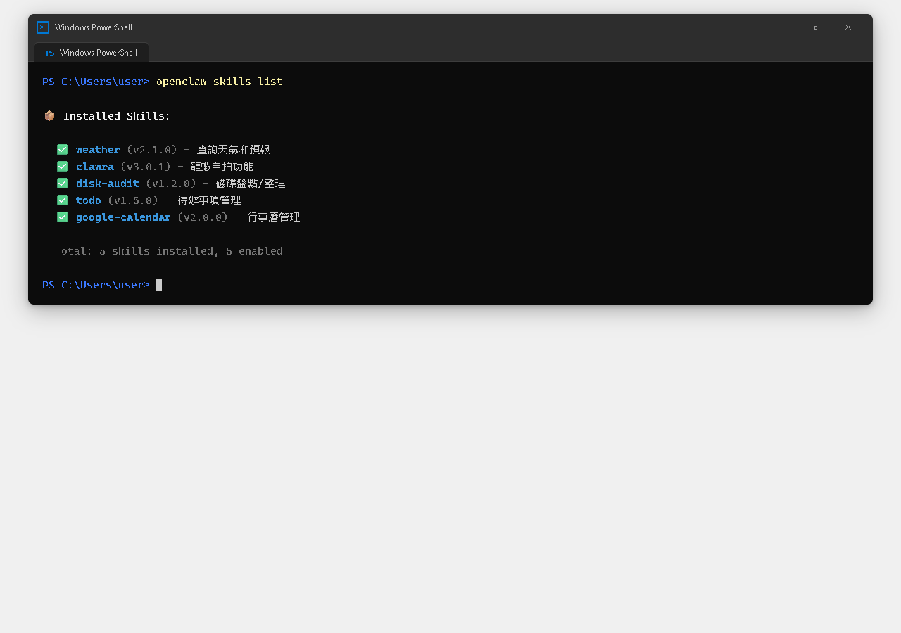

AI Agent 自主代理三王實戰
龍蝦本身會聊天，但查天氣、管行程、寄 Email 這些需要「跟外部服務互動」的能力，就要靠 Skills（技能）來擴充
Skills 就像手機上的 App——你的手機本身可以打電話、拍照，但你裝了 Uber 才能叫車、裝了 Foodpanda 才能訂餐。龍蝦也一樣，裝了天氣技能才能查天氣、裝了行事曆技能才能管行程。
在 OpenClaw 的架構裡，Skill 是一個擴充龍蝦能力的模組。每個 Skill 定義了：

2 / 11當你跟龍蝦說「今天台北天氣如何？」，背後發生了六個步驟：
你：「今天台北天氣如何？」
龍蝦的 AI 大腦判斷：這是在問天氣
AI 決定使用「天氣技能」
天氣技能去呼叫天氣 API，拿到資料
AI 把天氣資料整理成自然語言
「今天台北 26°C，多雲偶陣雨...」
每個技能都有一個 SKILL.md 定義檔，告訴龍蝦這個技能是什麼、能做什麼：
--- name: weather description: 查詢全球各城市的即時天氣、未來預報和氣象資訊。 --- # Weather（天氣查詢） 目標：根據使用者提供的城市或位置，查詢即時天氣資訊。 ## 功能 - 查詢即時天氣（溫度、濕度、風速、天氣狀況） - 查詢未來 3-7 天預報 - 紫外線指數 / 穿衣建議 ## 使用方式 - 「今天天氣怎麼樣？」 - 「台北明天會下雨嗎？」 - 「東京這週的天氣預報」 ## 需要的設定 - API Key：在 TOOLS.md 裡設定 OpenWeatherMap API Key - 預設城市：在 TOOLS.md 裡設定使用者所在城市

weather 天氣、news 新聞、rss-reader RSS 訂閱、translate 翻譯、calculator 計算、timer 計時器、recipe 食譜、currency 匯率
google-calendar 行事曆、notion 資料庫、email 收寄信、todo 待辦、notes 筆記、⭐ summarize 內容總結、⭐ tavily-search 聯網搜尋、⭐ gog Google 全家桶
clawra 龍蝦自拍、music 音樂搜尋、joke 講笑話、quote 每日金句、trivia 冷知識
disk-audit 磁碟盤點、sag 文字轉語音、screenshot 截圖、file-manager 檔案管理、system-monitor 系統監控
git 版本控制、code-review 程式碼審查、docker 容器管理、ssh 遠端伺服器、database 資料庫查詢
google-drive 雲端硬碟、onedrive OneDrive、doc-converter 格式轉換、pdf-tools PDF 操作、pptx-generator 簡報生成、excel-tools Excel
stock-tracker 股票報價、crypto-tracker 加密貨幣、finance-news 財經新聞、exchange-rate 匯率走勢
home-assistant HA 整合、camera IP 攝影機、light 智慧燈具控制
twilio-voice 語音通話（CH20 詳細教學）、⭐ agent-browser 人類等級瀏覽器操控
⭐ find-skills 自動搜尋技能、⭐ skill-vetter 安全審計、⭐ self-improving-agent 自我進化、⭐ proactive-agent 主動規劃

clawdhub search weather
clawdhub install weather # 或 openclaw skills install weather
openclaw skills list
openclaw skills disable weather openclaw skills enable weather
clawdhub update weather clawdhub update --all
openclaw skills remove weather
openclaw gateway restart

| # | 技能 | 分類 | 為什麼必裝 |
|---|---|---|---|
| 0 | skill-vetter | Agent 智慧 | 隱形第一裝，安全審計其他社群技能 |
| 1 | tavily-search | 生產力 | 聯網搜尋，沒這個等於瞎子 |
| 2 | weather | 生活實用 | 最實用日常技能，免 API Key |
| 3 | find-skills | Agent 智慧 | 讓龍蝦自己找工具安裝 |
| 4 | summarize | 生產力 | 長文/PDF/郵件一鍵抓重點 |
| 5 | agent-browser | 通訊語音 | 操控瀏覽器，填表單查資料 |
| 6 | gog | 生產力 | Google 全家桶一站搞定 |
| 7 | self-improving-agent | Agent 智慧 | 越用越聰明，記住你的偏好 |
| 8 | proactive-agent | Agent 智慧 | 從被動執行變主動規劃 |
npx clawhub@latest install skill-vetter tavily-search weather find-skills summarize agent-browser gog self-improving-agent proactive-agent8 / 11
很多技能需要額外設定才能使用——最常見的就是 API Key。
## Weather（天氣） - API Key: 你的OpenWeatherMap_API_Key - 預設城市: 台北 - 溫度單位: 攝氏 ## Google Calendar - 服務帳號金鑰路徑: ~/.openclaw/workspace/google-credentials.json - 主要行事曆: 工作
openclaw config set skills.weather.apiKey 你的API_Key openclaw config set skills.weather.defaultCity 台北
你可以修改技能的 SKILL.md 來客製化行為——例如改成「回覆天氣時用簡短一句話就好」，龍蝦就會照辦。
~/.openclaw/workspace/skills/ 裡的一個獨立資料夾，包含 SKILL.md 和（可選的）腳本。
| 問題 | 解決方式 |
|---|---|
| 安裝了技能但龍蝦不會用 | ① 忘記重啟 → openclaw gateway restart② API Key 沒設定 → 檢查 TOOLS.md ③ 技能被停用 → openclaw skills list 確認④ 說法太含糊 → 明確說「用天氣技能查台北天氣」 |
| 技能太多龍蝦搞混 | 控制在 10 個以內，功能重複的只留一個 |
| 我可以自己寫技能嗎？ | 可以！CH17 會專門教你，門檻不高 |
| 技能需要花錢嗎？ | 技能本身免費，但部分 API 有費用（大部分有免費額度） |
| 技能可以跨通道嗎？ | 可以。技能跟龍蝦綁定，不跟通道綁定。LINE / TG / Discord 都用同一個技能 |
| 哪裡找更多技能？ | clawdhub search 關鍵字、GitHub、OpenClaw Discord 社群 |
就像手機上的 App，給龍蝦擴充新能力——查天氣、管行程、寄 Email
涵蓋生活、工作、娛樂、開發、雲端、財經、智慧家庭、通訊語音、Agent 智慧進化等十大分類
用 clawdhub 或 openclaw skills 指令一鍵搞定搜尋、安裝、更新、移除
API Key 寫在 TOOLS.md、行為調整改 SKILL.md，讓技能完全符合你的需求
📖 下一章預告：CH16 天氣、新聞、行事曆——日常超能力
光會「裝技能」還不夠。下一章用六個實際場景教你怎麼把技能組合運用到日常生活中——排程提醒、天氣查詢、新聞摘要、Notion 整合、Google Calendar 整合！